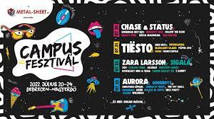
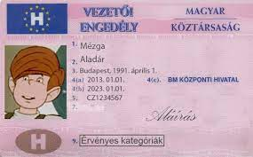

Tíz napot töltöttünk el, Szarvas városában. Ahová az unokatesóim is velünk tartottak.
| Egy pár nap programja | |||
|---|---|---|---|
| Hétfő | Kedd | Szerda | Csütörtök | Ez volt az első nap megérkeztünk, és elfoglaltuk a szállásunkat. Este pedig egy sütögetéssel zártuk a napot. | A második napon elmentünk egy nagyon jó éttermbe, utána ellátogatunk a helyi viziszínházba, ahol megnéztünk egy előadást. | A szerdai napon a Gyomaendrődi strandon töltöttük a napot. | A Csütörtöki napon horgásztunk a körös folyó partján, ami sikeresen zárult. |
Sajnos, csak a pénteki napra tudtam eljutni, mert egybe esett a költözésemmel. De ez az egy napot 100%-osan ki használtam, hajnal fél 5-ig maradtam. Minden olyan fellépőt amit azon a napon szerettem volna megnézni sikerült megtekintenem.
A nyár folyamán teljesítettem az elsősegély tanfolyamot, és sikeres vizsgát tettem róla. A kresz-t online formában tanultam meg az etitán rendszeren keresztül. Már csak a vizsga időpontomra várok.
